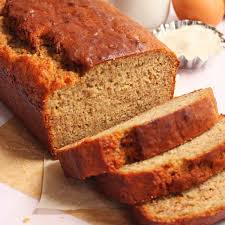

Banana Bread Recipe
History
Banana Bread recipes began to appear in cookbooks across America after baking powder began to be sold in grocery stores in the 1930's. Banana bread is believed to be a result of recourceful houewives in the Great Depression who did not want to waste over-ripe bananas. Additionally, the promotion of baking soda and flour products by companies also encouraged the making of banana bread.
This recipe makes a tasty loaf of banana bread, that will leave you begging for more! This is a simple and easy recipe that is popular amongst people all over the world!

Ingredients
- 2 cups of all purpose flour
- 1 teaspoon baking soda
- 1/4 teaspoon salt
- 3/4 cup brown sugar
- 1/2 cup butter
- 2 large eggs, beaten
- 2 1/3 cups mashed overripe bananas
- Optional - 1 cup semi-sweet chocolate chips
Directions
- Preheat your oven to 350 degrees F. Lightly grease a 9x5-inch loaf pan
- In a large bowl, combine your flour, baking soda, brown sugar, salt, and mix. In a seperate bowl, stir beat eggs and mashed bananas until well blended. Stir in the banana mixture into the flour mixture until well combined. If adding chocolate chips, pour them in once your batter is completely mixed.
- Pour batter into a lightly-greased 9x5-inch pan.
- Bake in the preheated oven for about 50-55 minutes. After baking, let bread cool in pan for about 10 minutes, then take and place on a plate or cooling rack.
Video:
Reference List Entry
All Recipes. (2023, November 13) Banana Bread Recipe - All Recipes.
REcipe